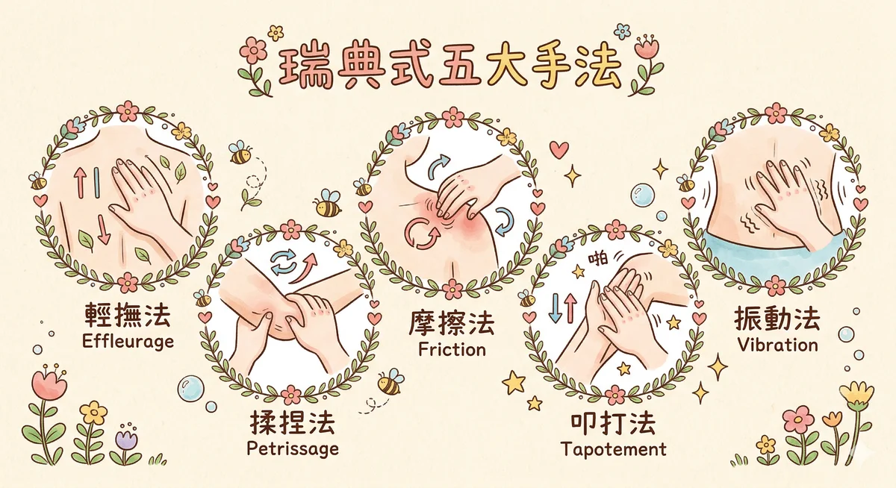

芳療按摩 芳療按摩 是結合瑞典式五大手法（輕撫、揉捏、摩擦、敲擊、振動）與精油調理，透過皮膚吸收、神經刺激、淋巴引流達到身心放鬆的整體療法。
馥靈之鑰的按摩指南不只教技法，還教你「這一塊肌肉為什麼緊」— 結合筋膜機制、情緒印記與精油配對。
按摩为什么有效（科学版）
很多人觉得按摩就是「按一按比較舒服」。对，但不只是这样。过去二十年的研究让我们愈来愈清楚一件事：按摩的效果不是心理安慰劑，是可以被测量的生理反应。你的手压下去的那一刻，细胞、神经、结締组织都在回应。
-
力学讯号转导 Mechanotransduction — 物理压力施加在皮肤和筋膜上，细胞表面的机械感受器会把这个压力转换成生化讯号。简单说，你按下去，细胞听到了，然後开始调整自己的行为。组织修复、发炎反应的调节，都从这里开始。
-
疼痛门控理论 Gate Control Theory — Melzack 和 Wall 在 1965 年提出的理论，到现在还是疼痛科学的基石。触觉信号沿著粗神经纤维传导，比痛觉信号跑得快。当你按压一个酸痛的点，触觉信号先到达脊髓，把「疼痛的门」关上了。所以按一按真的会比較不痛，不是错觉。
-
副交感神经啟动 — 按摩会刺激迷走神经（vagus nerve），这条从脑干一路延伸到腹腔的大神经。迷走神经一旦被啟动，身体就会从「战或逃」模式切换到「休息与修复」模式。皮质醇下降，催产素和血清素上升。这不是感觉变好，是荷爾蒙真的变了。
-
筋膜研究 Fascia Research — Robert Schleip 在 2003 年的研究改变了我们对结締组织的认知。筋膜不只是包裹肌肉的「保鲜膜」，它本身就是一个完整的感觉器官，里面布满了感受器。按摩师的手在推的不只是肌肉，是一张遍布全身的感觉网络。
做了 34 年，我最深刻的体会是：手感不是天赋，是持续对话的结果。你的手会学会听，学会等，学会在对的时机用对的力道。这件事急不来，也偷不了。
瑞典式按摩五大手法

瑞典式按摩是全世界最被广泛教授的按摩系统，由 Per Henrik Ling 在 19 世纪建立雛形，後来 Johann Georg Mezger 把它整理成五种标准手法。你在 SPA 会馆、运动按摩、医疗复健里遇到的手法，几乎都源自这个体系。点开每一张看完整说明。
轻撫法 Effleurage
它在做什么
用手掌整面贴合皮肤，沿著肌肉走向做长距离的滑动推撫，方向永远朝向心脏。这是所有按摩的起手式，也是收尾手法。它的任务不是「按到酸」，是让身体先知道「有人来了」。暖身、建立信任、促进静脈回流。
什么时候用
- 按摩开始的前 3-5 分钟
- 深层手法之间的过渡
- 按摩结束的最後 2-3 分钟
- 客人特別紧张或第一次来
压力等級
轻到中等。剛开始用体重 10-20% 的力量就够。客人的肌肉松开之後可以逐漸加重，但永远不該让人觉得痛。如果你发现自己在用蛮力，代表手法不对。
注意事项
- 避开静脈曲张严重的区域
- 皮肤有傷口或发炎时跳过
- 方向错了（离心方向推）会增加静脈压
推薦精油搭配
甜杏仁油为基底，加入熏衣草 + 甜橙（2% 稀释）。熏衣草安撫神经、甜橙提升信任感。这个组合适合大多数人，过敏风险低。
揉捏法 Petrissage
它在做什么
把肌肉提起来、擠压、扭转、滚动。像在揉面團一样，但力道更精准。这个手法直接作用在肌肉深层，擠压让血液被推出去，放开让新鲜血液灌进来。肌肉里的代谢废物（乳酸、组织液堆积）就是靠这个过程被清掉的。
什么时候用
- 轻撫法暖身之後，进入主力阶段
- 肩颈僵硬、背部紧绷
- 运动後肌肉酸痛
- 长期久坐造成的肌肉缩短
压力等級
中到深。但「深」不等于「大力」。深层的意思是你的力量穿透到肌肉底层，靠的是角度和体重，不是手臂的蛮力。做完手不該酸，如果你的手比客人还累，那就是用错力了。
注意事项
- 骨头突出处不能揉捏（脊椎棘突、肩胛骨嵴）
- 急性发炎的肌肉避开（红肿热痛）
- 老年人皮肤薄，力道减半
推薦精油搭配
荷荷巴油为基底，加入迷迭香 + 姜（2% 稀释）。迷迭香促进循环，姜温热驱寒。冬天或体质偏寒的人特別适合。
摩擦法 Friction
它在做什么
用拇指、指腹或指关节在一个定点做深层的画圓或来回交叉摩擦。不是在皮肤表面滑动，是皮肤跟底下的组织一起被带动。目的是处理沾黏、结締组织纤维化、关节周围的紧缩。James Cyriax 发展的「深层橫向摩擦」就是这个手法的临床应用。
什么时候用
- 关节活动度受限（肩关节、膝关节）
- 肌腱炎、网球肘的慢性期
- 旧傷的疤痕组织松解
- IT Band 或足底筋膜的紧绷点
压力等級
深。这是五大手法里压力最集中的一个，因为接触面积小（拇指尖端）、力量集中在一个点上。但做的时候要持续跟客人确认：「这个力道可以吗？」客人皱眉就太重了。
注意事项
- 急性扭傷 48 小时內禁用
- 骨折区域禁用
- 做太久会造成局部发炎（每个点 30-60 秒为限）
- 不适合大面积使用，它是点状精准工具
推薦精油搭配
圣约翰草浸泡油为基底，加入薄荷 + 尤加利（2% 稀释）。薄荷的冰涼感可以帮助客人在深层手法中感觉到松弛而非抗拒。局部使用即可，不需要全身。
叩击法 Tapotement
它在做什么
用手掌、拳头或手刀做有节奏的轻拍击。听起来很暴力，其实不然。正确的叩击法像打鼓，靠手腕的弹性而不是手臂的力量。它刺激神经末梢、促进局部血液循环，同时让已经被前面手法松开的肌肉恢复张力。做完深层按摩如果不收好，客人站起来会软脚。
什么时候用
- 按摩的结束阶段，喚醒肌肉张力
- 运动前的肌肉激活
- 背部按摩的收尾（避开脊椎）
- 大腿和臀部的循环促进
压力等級
轻到中。叩击的重点是频率和节奏，不是力量。想像你在敲一面鼓，鼓皮要弹起来才对。如果你的手「黏」在客人身上，代表太重了。
注意事项
- 肾脏区域（後腰两側）绝对禁止叩击
- 脊椎正上方不做
- 骨质疏松的长辈避开
- 想让客人放松入睡就不要用这个，它是喚醒用的
推薦精油搭配
葡萄籽油为基底，加入柠檬 + 迷迭香（2% 稀释）。柠檬提神清爽，迷迭香激活循环。收尾喚醒的气味要让人精神回来，不能再用熏衣草了。
振动法 Vibration
它在做什么
手掌或指尖贴在皮肤上，做快速而细微的震颤，或者轻轻摇擺整个肢体。这个手法看起来最不起眼，效果却最深。振动频率会传导到深层肌肉和神经叢，产生镇静效果。腹部按摩常用的就是这个手法，因为肠胃对振动的反应非常明显。
什么时候用
- 客人极度紧张、无法放松
- 腹部按摩（促进肠蠕动）
- 深层手法後需要镇静的区域
- 面部按摩的收尾
压力等級
轻。振动法几乎不需要压力，靠的是频率。你的手要像一台很精密的小马达，稳定地振动。这个手法最考验手的控制力，新手通常做 30 秒手就累了。练习方式：手掌平放桌面，试著让手指快速颤动但手腕不动。
注意事项
- 腹部有发炎或手术傷口时避开
- 怀孕初期腹部禁用
- 做太快会变成抖动，效果打折
推薦精油搭配
甜杏仁油为基底，加入罗马洋甘菊 + 熏衣草（1.5% 稀释）。这是最温柔的组合，洋甘菊镇静神经，熏衣草安撫情绪。适合做完整场按摩最後的收尾。
淋巴引流按摩
淋巴系统是身体的排水系统。全身有超过 600 个淋巴结，分布在颈部、腋下、鼠蹊部、膝盖後側等位置。它负责回收组织液、过濾细菌病毒、运送免疫细胞。但淋巴系统有一个致命的弱点：它没有帮浦。
心脏有心脏帮你泵血，淋巴液却只能靠三件事流动：肌肉收缩、呼吸运动、还有外力按摩。你不动，它就不动。所以久坐一整天之後脚会肿，不是因为喝太多水，是淋巴液回不去。
Dr. Emil Vodder 手法（MLD）
1936 年，丹麥物理治疗师 Emil Vodder 和他的妻子 Estrid 发展出「徒手淋巴引流 Manual Lymphatic Drainage」。这套手法现在是全世界淋巴水肿处理的黄金标准。它跟一般按摩最大的差別在：力道极轻，方向极精准。
引流方向（永远朝向淋巴结）
- → 臉部、头部：往颈部淋巴结方向引流
- → 手臂：从指尖往腋下淋巴结引流
- → 腿部：从脚趾往鼠蹊部淋巴结引流
- → 腹部：顺时針画圓，往鼠蹊部引流
- → 背部：从脊椎两側往腋下引流
压力
极轻。只作用在皮肤层，大约 30-40 公克的压力。怎么感受 30 公克？把手放在自己的眼皮上，那个重量就差不多了。如果你按到让皮肤发红，那就太重了。淋巴管在真皮层下方 0.5-2mm 的位置，不需要也不应該用力按。
手法节奏
缓慢、有节奏的推送，每次推 5-7 秒，然後停，再推。想像你在推一条安静的河，不是急流。整个过程应該慢到让人想睡觉。快不了，快了就没效果。
淋巴引流的好处
- 消除水肿（臉部浮肿、腿部肿脹）
- 增強免疫力（加速淋巴细胞循环）
- 术後恢复（整形、抽脂术後常规处理）
- 减轻慢性疲劳（代谢废物加速排出）
- 改善皮肤状態（组织液循环改善 = 皮肤更透亮）
做完之後的感觉
- 口渴（正常，多喝水帮助排毒）
- 频尿（淋巴液回到循环系统後经肾脏排出）
- 轻微疲倦（副交感神经主导）
- 隔天精神特別好
禁忌症（这些情况不能做）
- 急性感染（发烧、发炎期间淋巴引流会让感染扩散）
- 深层静脈血栓（DVT）— 血块可能被推动造成肺栓塞
- 充血性心脏衰竭（增加心脏负担）
- 惡性肿瘤未经医师評估（淋巴引流可能促进癌细胞转移的疑虑尚有爭议，但安全起见需医师同意）
- 急性肾衰竭
婴儿按摩
婴儿按摩和成人按摩是完全不同的事情。成人按摩处理的是肌肉问题，婴儿按摩处理的是神经发展和亲子连结。触觉是人类最早发展完成的感觉系统，胎儿在子宮里第 8 週就已经有触觉反应了。
Tiffany Field 在迈阿密大学的触觉研究中心（Touch Research Institute）做了大量研究，其中最被引用的发现是：接受按摩的早产儿比没有接受按摩的早产儿，体重增加快 47%。不是因为吃得多，是因为迷走神经被按摩刺激後，消化吸收的效率提升了。47% 这个数字，让全世界的新生儿加护病房开始重新思考「触碰」这件事。
安全手法（适合 0-12 个月）
腿部和脚
从大腿往脚趾方向，用手掌轻轻包覆滑动。脚底可以用拇指画小圓圈。腿部是最安全的起始区域，因为宝宝比較不会抗拒。如果宝宝踢脚，那是开心的讯号，不是拒绝。
手臂和手
从肩膀往手指方向滑动。手掌可以轻轻打开，每根手指分別轻轻转动。很多宝宝的手是握拳的，按摩能帮助手指自然展开，也刺激精细动作的发展。
腹部（顺时針）
用手掌根部从宝宝的右下腹开始，顺时針画圓。这个方向跟大肠的走向一致，可以帮助消化和排气。脹气或肠絞痛的宝宝，这个手法特別有效。力道像在撫摸一颗水蜜桃的表面。
背部
宝宝趴著的时候，从肩膀往臀部方向，用两手交替做长推。不要按压脊椎正上方。背部按摩通常在最後做，因为很多宝宝做到这里已经要睡著了。
不适合按摩的时机
- 宝宝发烧时（体温调节还不稳定，按摩会干擾）
- 皮肤有疹子、湿疹发作期（摩擦会加重刺激）
- 打完预防針 24 小时內（注射部位和全身反应需要观察）
- 宝宝正在哭鬧或明显煩躁（按摩是溝通，不是強迫）
- 剛喝完奶 30 分钟內（容易吐奶）
有一件事值得提的。按摩的时候，催产素不只在宝宝体內上升，在父母体內也会上升。这是双向的。很多妈妈跟我说，帮宝宝按摩到後来，自己的焦虑也跟著降下来了。这不是想像，是催产素在工作。
芳疗按摩 × 精油选择
芳疗按摩不是「按摩的时候顺便点精油」。精油的选择要根据按摩的目的来调配，载体油要根据皮肤状况来选，稀释浓度要精准。这一段整理了四种常见目的的配方，都是教学和实务中反覆验证过的组合。
| 目的 | 精油配方 | 载体油 | 稀释浓度 | 说明 |
|---|---|---|---|---|
| 放松舒压 | 熏衣草 + 甜橙 + 依兰 | 甜杏仁油 | 2% | 熏衣草镇静中枢神经，甜橙提升血清素，依兰降血压降心率。这三支混在一起的气味接受度非常高，几乎没有人会排斥。失眠的人做完通常可以睡得很沉。 |
| 疼痛舒缓 | 薄荷 + 迷迭香 + 姜 | 荷荷巴油 | 2% | 薄荷的薄荷醇有天然的止痛和冰涼效果，迷迭香促进血液循环把发炎介质带走，姜温热深层驱寒。肩颈酸痛、运动傷害、经期不适都适用。荷荷巴油好吸收不黏膩。 |
| 排毒代谢 | 杜松 + 丝柏 + 葡萄柚 | 葡萄籽油 | 2% | 杜松利尿排水，丝柏收敛静脈壁、改善静脈回流，葡萄柚促进脂肪代谢。配合淋巴引流手法效果最好。葡萄籽油质地最轻，适合大面积塗抹。注意：葡萄柚有光敏性，做完 12 小时內不要晒太阳。 |
| 美容臉部 | 玫瑰 + 乳香 + 天竺葵 | 玫瑰果油 | 1% | 玫瑰抗氧化、促进细胞再生，乳香紧致皮肤、淡化细纹，天竺葵平衡油脂分泌。玫瑰果油富含维生素 A 和 C，本身就有护肤效果。臉部浓度要比身体低，1% 就够了。 |
调油温度
温油比冷油好吸收，但绝对不能用微波炉加热（会破坏精油分子结构）。最好的方式是把调好的油倒在掌心，双手搓热 10 秒再塗。或者把油瓶放在 40 度左右的温水里浸泡 5 分钟。手温是最安全的温度。
稀释浓度速算
- 身体按摩：2%（10ml 基底油 = 4 滴精油）
- 臉部按摩：1%（10ml = 2 滴）
- 敏感肌 / 老人：1%（10ml = 2 滴）
- 婴儿（3 个月以上）：0.25%（30ml = 1 滴）
- 孕婦（4 个月以上，安全精油）：1%
自我按摩三招（不需要別人帮忙）
不是每天都能约到按摩师。但你的手 24 小时都在，你的身体也是。这三招是我自己每天都在做的，加起来不到 10 分钟，效果比你想的好。
第一招：肩颈 — 双手交叉按压斜方肌
- 右手越过头顶，搭在左边的肩膀上。手指自然弯曲，像抓住肩膀一样。你摸到的那一大块硬硬的肌肉就是上斜方肌，办公室族的第一号受灾戶。
- 用四指和拇指像揉捏法一样，把肌肉提起来、擠压、放开。不用很大力，感觉到酸就对了。从靠近脖子的位置开始，慢慢往肩膀外側移动。
- 每个酸痛点停留 5-8 秒，用拇指画小圓圈。然後换边。左右各做 1.5 分钟。
- 做的时候可以在指尖滴一滴薄荷精油（用基底油稀释过的），薄荷的沁涼感会让紧绷的肌肉更快松开。没有精油也没关係，想到薄荷的味道，认知芳疗就已经在运作了。
第二招：手掌 — 拇指画圓按压劳宮穴
- 劳宮穴在哪里？握拳，中指和无名指指尖碰到手掌的那个位置就是。中医说它是「心包经」的滎穴，按了可以安神定心。现代的说法是：手掌的神经末梢极度密集，按压这里会快速啟动副交感神经。
- 用另一只手的拇指，对准劳宮穴，慢慢画圓按压。力道不需要大，有轻微的酸脹感就够了。速度要慢，大约一秒一圈。
- 每只手做 1 分钟。开会前、考试前、焦虑的时候，随时可以做。做完你会发现手心是热的，那是血液循环被打开了。
- 配熏衣草精油。在掌心滴一滴稀释过的熏衣草油，搓热之後捧到鼻子前面，深呼吸三次。熏衣草的芳樟醇（linalool）直接作用在杏仁核，降低焦虑反应。
第三招：足底 — 网球踩压湧泉穴
- 湧泉穴在脚底前三分之一的凹陷处。把脚趾往下捲，脚底出现一个「人」字纹，交叉点就是。它是肾经的第一个穴位，也是足底筋膜最容易紧绷的位置。
- 准备一颗网球（高爾夫球太硬，先不要）。站著或坐著都行，把网球放在脚底下，用体重缓慢地前後滚动。从脚趾根部滚到脚跟，整个足底都要照顾到。
- 滚到湧泉穴的位置，停下来，用体重慢慢施压 10 秒。感觉到酸脹是正常的。然後繼续滚。每只脚 2.5 分钟。
- 做完之後，在脚底塗一点稀释过的岩兰草精油（vetiver），用手掌搓勻。岩兰草是所有精油里最「接地」的，气味沉稳厚重，像泥土和木头。睡前做这个，整个人会从脚底开始安静下来。
按摩的 5 个迷思
做了 34 年，这些话我听到会反射性地想纠正。不是客人的错，是太多人在传播错误的观念。
迷思一：「痛才有效」
很多人觉得按到痛才是有按到，不痛就是白花钱。
错。过度疼痛会触发肌肉的防禦性收缩，你的肌肉在保护自己不被压坏。这时候不但按不开，还会造成微损傷，隔天更酸。好的按摩力道是「酸但舒服」，你的身体会放松而不是绷紧。如果你发现自己在咬牙忍耐，那个力道就太重了。
迷思二：「按摩可以瘦身」
如果按一按就能瘦，我应該已经是超模了。
按摩不会直接分解脂肪，没有任何按摩手法可以做到这件事。但淋巴引流按摩确实能改善水肿，让你看起来线条更明显。促进血液循环也有助于新陈代谢。所以按完觉得「好像瘦了」不是错觉，但那是消水肿，不是减脂。想瘦还是要靠饮食和运动。
迷思三：「经期不能按摩」
每个月都有客人问我这个问题。
可以按。但避开腹部和腰薦部位，因为那里的刺激可能影响子宮收缩。轻柔地按四肢和肩颈反而能纾缓经期不适，促进末梢循环、放松因疼痛而绷紧的肌肉。力道放轻一点就好。如果经痛非常严重，那天就休息，不要勉強。
迷思四：「吃饱後马上按」
赶时间的客人常会吃完饭直接衝过来。
至少等 1 小时。剛吃饱的时候，你的血液集中在消化系统帮忙消化食物。这时候按摩会把血液分散到其他地方，一方面消化变慢容易脹气不舒服，另一方面按摩效果也打折扣。趴著的时候胃被压住，更容易恶心。等一下再来，不急。
迷思五：「越久越好」
有人会预约三小时的全身按摩，觉得时间越长越划算。
全身按摩 60 到 90 分钟是最佳区间。超过 2 小时，肌肉会进入过度疲劳的状態，就像你运动太久一样，隔天反而更酸更累。按摩跟很多事情一样，重点不是量，是品质。与其花三小时随便按，不如花一小时精准地处理你最需要的部位。
办公室 5 分钟肩颈急救
坐在办公桌前一整天，肩膀不知不觉就爬到耳朵旁边了。这套动作不需要站起来，不需要任何道具，坐在椅子上就能做。五分钟，从头到尾跟著做一遍，你会感觉脖子好像重新接回身体了。
Step 1：聳肩放掉
- 肩膀用力往耳朵方向聳起来，尽量高，维持 5 秒。
- 然後突然放掉，让肩膀自然落下来。
- 重复 5 次。每次放掉的时候，刻意感受一下肩膀放松的感觉。那个落差就是你平常一直在紧绷的程度。
Step 2：左右转头
- 头慢慢转向右边，转到你能转的最大角度，停 5 秒。
- 慢慢转回正面，再转向左边，停 5 秒。
- 左右各做 3 次。动作要慢，不要甩。颈椎有七节小骨头，甩脖子容易拉傷韧带。
Step 3：斜方肌伸展
- 右手跨过头顶，轻轻按住左边耳朵上方。
- 头往右边慢慢傾斜，感觉左边肩膀到脖子之间那条肌肉在被拉开。
- 维持 30 秒，换边。这条肌肉叫斜方肌（trapezius），是上班族最容易紧绷的地方。
Step 4：扩胸展肘
- 双手十指交扣，放在後脑勺。
- 手肘慢慢往後展开，胸口打开，深吸一口气，维持 10 秒。
- 这个动作在对抗你整天駝背打电脑造成的前傾姿势。胸大肌缩短、背肌被拉长，这个动作把它们拉回来。
Step 5：温敷眼睛
- 双手掌心对搓 10 到 15 下，搓到发热。
- 马上捂住闭著的眼睛，手掌贴合眼眶，不要压到眼球。
- 维持 30 秒，感受手掌的温度透进眼周。眼睛周围的肌肉是全身最薄最容易疲劳的，温敷能促进血液循环、放松睫状肌。这也是为什么你会觉得做完之後眼前好像亮了一点。
按摩的生理机制（深潜版）
前面简单提了四个科学机制。这一段往下挖，看看你的手压下去那一刻，身体里面到底在发生什么事。
血液循环：不只是「促进血液循环」六个字
按压皮肤和肌肉的时候，局部的微血管先被压扁，血液被擠出去。手放开的瞬间，血管弹回来，新鲜的含氧血液灌进来。这个「擠 — 放 — 灌」的循环叫做反应性充血（reactive hyperemia）。做完按摩皮肤变红，不是破皮了，是微循环被打开了。
这个机制带来三件事：第一，含氧血带来营养物质和氧气，加速组织修复。第二，回流的静脈血带走代谢废物（二氧化碳、乳酸堆积）。第三，局部温度升高，这本身就能降低肌肉的黏滯度（viscosity），让僵硬的肌肉变得柔软。
研究显示，一次 30 分钟的按摩可以让局部血流量增加 30-50%，效果持续 30 到 60 分钟。这也是为什么按摩後客人会觉得整个人暖暖的。
淋巴引流：身体的排水系统
淋巴液每天大约循环 2-4 公升，负责回收组织间的多余液体、运送免疫细胞、过濾细菌和病毒。但淋巴管壁非常薄，没有肌肉层，更没有像心脏那样的帮浦。它靠三件事流动：骨骼肌收缩、呼吸时膈肌的擠压、还有外力按摩。
按摩的方向为什么要朝向心脏？因为淋巴液的终点是锁骨下静脈，所有的淋巴管最後都匯入那里。朝向心脏推，是在帮淋巴液回家。反方向推，不但没效果，还可能让组织液往错误的方向堆积。
筋膜放松：你按的不只是肌肉
筋膜（fascia）是包裹每一条肌肉、每一个器官、每一根血管的结締组织。把它想像成一件从头到脚的全身紧身衣。你的肩膀紧，可能不是肩膀肌肉的问题，是筋膜从背部到手臂的这一整条线都在拉扯。
Thomas Myers 在《解剖列车》（Anatomy Trains）里描述了 12 条筋膜经线。这些经线跨越多个关节和肌肉群，形成连续的张力网络。按摩师的手在推揉的时候，影响的不只是那一小块肌肉，而是整条筋膜线上的所有组织。
按摩产生的持续压力会刺激筋膜里的成纤维细胞（fibroblasts），让它们释放透明质酸和胶原蛋白，恢复筋膜的滑动性。这就是为什么深层按摩之後，你会觉得整个人「松」了，不是某一块肌肉松了，是整个结构松了。
经络按摩 vs 西方按摩
这两套系统从不同的文化出发，用不同的语言描述身体，但在按摩师的手下，它们经常互相补充。了解差异不是为了选边站，是为了在对的时候用对的手法。
| 面向 | 经络按摩（东方） | 瑞典式按摩（西方） |
|---|---|---|
| 理论基础 | 气血循环、脏腑对应、子午流注（时辰经络） | 解剖学、生理学、生物力学 |
| 手法重点 | 穴位按压（点状）、经络循行推按（线状） | 肌肉走向推撫（面状）、深层组织处理 |
| 压力方式 | 拇指、肘尖定点施压，停留 3-10 秒 | 掌面大范围滑动，持续流动 |
| 診断方式 | 望闻问切、穴位反射区压痛 | 触診肌肉张力、ROM（关节活动度） |
| 适合状况 | 內脏功能调理、情绪问题的身体表现、经络不通 | 肌肉酸痛、运动傷害、筋膜沾黏、放松 |
| 精油搭配 | 根据经络属性选油（肝经→熏衣草/佛手柑，肾经→岩兰草/杜松） | 根据症状选油（酸痛→薄荷/迷迭香，放松→熏衣草/甜橙） |
| 学习门槛 | 較高（需记穴位位置、经络走向、脏腑理论） | 中等（需理解解剖学和基本手法） |
实务上，很多有经验的按摩师会把两套整合起来。用瑞典式的轻撫法暖身，用揉捏法处理大面积的肌肉问题，遇到特定的「卡点」就切换成穴位按压。客人不需要知道你用了哪一套，他只知道做完之後整个人都松了。
按摩禁忌完整指南
按摩很安全，但不是所有情况都适合。知道什么时候不該做，跟知道怎么做一样重要。这份清单是给按摩师和一般人参考的，不是用来吓人的。
绝对禁忌（无论如何不能做）
- 发烧 38 度以上 — 按摩会加速血液循环，让体温更高，免疫系统更混亂
- 急性感染（流感、COVID 症状期）— 按摩可能让病原体随循环扩散
- 深层静脈血栓（DVT）— 按压可能把血块推动，造成肺栓塞，这个是致命的
- 骨折未愈合 — 不需要解释
- 皮肤上有开放性傷口、严重烧烫傷
- 不明原因的劇烈疼痛 — 先看医生排除严重问题
局部禁忌（那个部位避开，其他地方可以做）
- 静脈曲张严重的区域 — 轻撫法可以，但揉捏和深层手法避开
- 皮肤疹子、湿疹、牛皮癬发作区域 — 摩擦会加重发炎
- 近期手术部位 — 等医生确认傷口愈合才能碰
- 肿瘤或不明硬块上方 — 先确认性质再决定
- 急性扭傷前 48 小时 — 冰敷 + 休息优先，48 小时後可以开始轻柔按摩
特殊状况（可以做但要调整）
- 怀孕 — 前三个月通常避免全身按摩。四个月以後可以做，但避开腹部、腰薦部、合谷穴和三阴交（传统上认为可能刺激宮缩）。力道放轻，側躺姿势最舒服
- 高血压 — 可以做放松按摩，但避免叩击法和过強的深层手法。按摩过程中如果客人头晕就停下来
- 糖尿病 — 末梢神经感觉可能迟鈍，客人说「不痛」不代表力道够安全。用你的眼睛看皮肤反应，不要只依赖客人的回报
- 骨质疏松 — 避开叩击法，力道要比正常轻 50%。脊椎不能直接施压
- 服用抗凝血劑 — 容易瘀青，力道轻柔，避免深层手法
居家自我按摩（头部与手部）
前面教了肩颈、手掌、足底三招。这里补充头部和手部的完整自我按摩。这两个部位是你随时随地都能做的，而且效果出乎意料地好。
头部自我按摩：三个动作
- 十指插入头发里，指腹贴住头皮（不是抓头发），从前额发际线开始，用画小圓圈的方式往後推到枕骨。动作要慢，每个点停 3 秒。头皮的筋膜叫帽状腱膜（galea aponeurotica），它从额头连到後脑，长时间紧绷会造成头痛。你现在做的就是在松开它。
- 双手食指和中指放在太阳穴，轻轻画圓按压 30 秒。方向先顺时針 15 秒，再逆时針 15 秒。太阳穴下方就是顳肌（temporalis），咬牙切齿的时候它在用力。你压力大的时候不知不觉在咬牙，这里就会紧。
- 双手放到後脑勺，拇指找到枕骨下方的那个凹陷处（风池穴的位置）。拇指朝上用力顶住，头微微往後仰，靠头的重量来施压。维持 10 秒，放掉，做 3 次。做完你会觉得眼前好像亮了一点，那是因为枕下肌群和椎动脈被释放了。
手部自我按摩：三个动作
- 合谷穴在哪里？拇指和食指之间的虎口肌肉最丰厚的那个点。用另一只手的拇指顶住它，食指从手背那一側夹住，用力按压 10 秒。会酸痛是正常的。中医说合谷主治头面部所有问题（头痛、牙痛、眼睛痛、感冒），现代研究认为它的效果来自刺激尺神经分支引发的內啡肽释放。
- 从食指和中指之间开始，用另一只手的拇指和食指夹住指縫间的肌肉（骨间肌），从指根到指蹼慢慢擠压。每条指縫做 5 秒，做完所有四条指縫。打字一整天之後做这个，你的手会马上觉得轻松。
- 用拇指和食指夹住每根手指的指甲两側（井穴的位置），轻轻施压 3 秒再放开。从小指开始做到拇指。中医的十二经络有六条在手指末端起止，刺激指尖等于同时啟动多条经络的气血循环。
按摩 × 精油配方（进阶版）
前面整理了放松、疼痛、排毒、美容四种基本配方。这里补充几个更特定的场景配方，是实务中被问到最多的。
经期不适配方
► 精油：快乐鼠尾草（Clary Sage）2 滴 + 熏衣草 1 滴 + 马郁兰（Marjoram）1 滴
► 基底油：甜杏仁油 10ml（2% 稀释）
► 用法：塗抹在下腹部和腰薦部，用掌心顺时針画圓轻推 5 分钟。
► 原理：快乐鼠尾草含有乙酸沉香酯，有类雌激素调节作用（不是补充雌激素，是调节），搭配熏衣草镇痛和马郁兰的温经活血。多项研究显示，快乐鼠尾草搭配按摩对原发性经痛的缓解优于安慰劑。
肌肉运动後恢复配方
► 精油：冬青（Wintergreen）1 滴 + 尤加利 1 滴 + 熏衣草 1 滴 + 薄荷 1 滴
► 基底油：山金车浸泡油（Arnica）10ml（2% 稀释）
► 用法：运动後 30 分钟內塗在目标肌群上，用揉捏法和轻撫法交替按摩 10 分钟。
► 原理：冬青含有水杨酸甲酯（天然的止痛消炎成分，和阿斯匹灵同源）。山金车浸泡油本身就有减少瘀青和消炎的传统用途。薄荷的冰涼感降低局部温度。注意：冬青用量不能超过整体配方的 25%，过量有水杨酸中毒风险。
安眠放松配方（睡前使用）
► 精油：熏衣草 2 滴 + 甜马郁兰 1 滴 + 岩兰草 1 滴
► 基底油：甜杏仁油 10ml（2% 稀释）
► 用法：睡前塗在脚底和後颈，用轻撫法和振动法按摩 5 分钟。
► 原理：熏衣草的沉香醇通过嗅觉直达杏仁核降低警觉度。岩兰草是所有精油里最「沉」的，它的倍半萜烯类化合物让大脑产生接地感。塗在脚底是因为肾经起于湧泉穴，中医认为「肾主封藏」，睡前安撫肾经帮助身体进入收藏模式。
提神醒脑配方（下午三点用）
► 精油：迷迭香 2 滴 + 薄荷 1 滴 + 柠檬 1 滴
► 基底油：荷荷芭油 10ml（2% 稀释）
► 用法：塗在太阳穴和後颈，用指腹画小圓圈按压 2 分钟。也可以直接滴 1 滴薄荷在手心搓热，捧到鼻前深吸三口。
► 原理：迷迭香的 1,8-桉叶油醇（cineole）在 2012 年的研究中被证实能提升认知表现和记忆力。薄荷的薄荷醇刺激三叉神经，产生即时的清醒感。柠檬提振精神。注意：柠檬有光敏性，如果之後要出门晒太阳，换成甜橙。
美业人的按摩技术进阶
基础手法谁都能学，但从「做得标准」到「做出自己的风格」之间，有很多东西是教科书不会写的。这些都是做了 34 年的手感心得。
用体重不用手力
新手最常犯的错是用手臂的力量按。这样做半小时你的手就废了，还没到下午就开始酸。正确的方式是调整你的重心，让体重自然地透过手掌传递到客人身上。
站姿很重要。前後弓箭步，後脚蹬地，力量从腿到腰到肩到手臂到掌心，是一条完整的传导链。任何一环断了（肩膀聳起来、手肘锁死），你就从「传导」变成「硬推」。
练习方式：找一面墙，用你的掌根去「推」墙壁。不要用手力，用你的身体重心去靠。感觉力量从脚底一路传到掌心。能做到这个，你就理解了。
学会「听」肌肉说话
你的手不只是在施力，它同时在接收讯息。肌肉是紧还是松？是温的还是涼的？有没有结节（那种摸起来像小石头的硬块）？有没有颤动（不自主的微微抖动，通常代表即将释放）？
一个好的按摩师，手放上去的前 30 秒是在「听」，不是在「做」。你先用轻撫法扫过一遍，收集资讯：哪里最紧、哪里最冷、哪里有异常。然後才决定接下来的策略。
这个能力没有捷径，就是靠量。摸过一千个人的肩膀之後，你的手指能分辨出「今天压力大」和「长期姿势不良」造成的僵硬差別。前者肌肉是表层紧、深层其实还好；後者是从表层到深层全部都硬的。
节奏比力道重要
按摩不是越用力越好，也不是越快越好。好的按摩有节奏感，像音乐一样。轻撫法是慢板，揉捏法是中板，摩擦法是断奏，叩击法是快板，振动法是颤音。手法之间的过渡要像音乐的过门，自然、不突兀。
客人的身体会跟著你的节奏走。你快，他的心跳会加速；你慢，他的呼吸会变深。如果你想让客人放松，从头到尾维持一个稳定的、偏慢的节奏就好。不要一下快一下慢，那会让神经系统更混亂。
做好收尾和客後护理
按摩结束不是手离开的那一刻。收尾做好了，客人带走的体验会好很多。最後三分钟用轻撫法和振动法慢慢把节奏降下来，让客人的身体知道「要结束了」。不要突然停手。
做完之後给客人一杯温水，提醒三件事：今天多喝水（帮助代谢废物排出）、避免劇烈运动（肌肉剛被松开，需要时间重建张力）、如果隔天有轻微酸痛是正常的（叫做迟发性肌肉酸痛，24-48 小时会消退）。
这些看起来不起眼的细节，是客人会不会回来的关键。技术可以学，但让人感觉被照顾的能力，是从这些地方累积的。